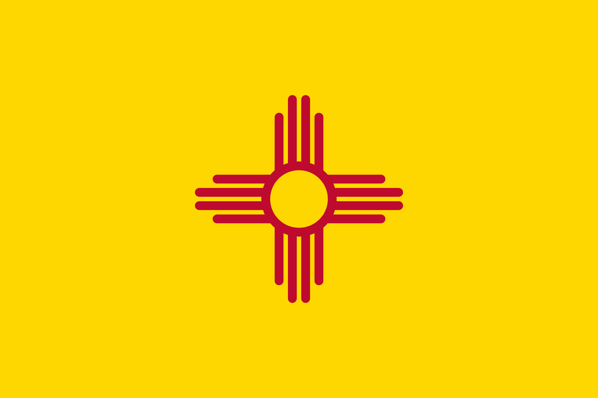
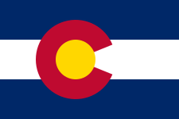

There are multiple places to go fishing and some of the biggest places or fisheris across the United States,
Three of biggest places in the U.S are Alsaka, Montana, Colorado, and New Mexico. These are some of the best places
to go fly fishing. the best places to find trout or fiah in general are Rivers or small ponds and lakes.
Why might you want a spesific spot to fish
The reasons for the spesific spots is for safty, knowing your surroundings, and knowing what you are about to do.
But safty and your surroundings are not always what you need to know, there are some upsides to this consept such as,
Knowing what fish are in spesific spots on the river and where some hot spots are. Also, kowing what you might encounter outon the river.

Get this image on: Wikimedia Commons

Get this image on: Wikimedia Commons
Here are some good places to Fish In Colorado.
South platte River
Frying Pan river
Colorado River
Clear creek canyon
Eagle river
The Roaring fork river
Aurora Reservoir
Reudi Resavoir
What States would be best for you
Some people from the U.S have different states where they fish their best like Montana or Wyoming. But there many other states that have good fisheies.
In other caseses, some peope fish their best in their home state butsome states might forbide fishing because of fancy places in this nation which is
pretty dumb but there might be state laws are regalations such as needing different ages to get your lisense ven be state legal to fish.

.jpeg)